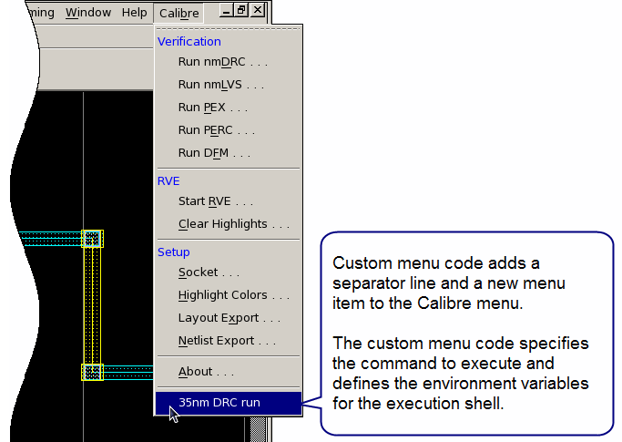

You can add custom
menu items to the Calibre integration menu for supported design
tools. The custom menu item can be defined to call any valid shell
script or command and environment variables can be defined for the
execution environment.
The custom menu feature is useful if you want
to execute a command from within your design session and define
the environment variables in effect for the command. Custom menus
are described in the section “Custom Menu Items in Design Tools” in the Calibre Interactive User’s
Manual.
The following example adds
one custom menu item and sets environment variables used during execution. Figure 1 shows the new menu item.
Figure 1. Custom Menu Item in Design Tool
Prerequisites
You
are using one of the following supported design tools: Calibre DESIGNrev, Synopsys
IC Compiler, Cadence Virtuoso, or Cadence Encounter.
Procedure
- Create the Tcl menu customization
file and name it menu.tcl. The following example adds
a menu separator line and the menu selection “35nm DRC run” at the
end of the Calibre menu.
# custom menu file in Tcl
#
mgc_calibre_add_menu_item -type separator
mgc_calibre_add_menu_item -label "35nm DRC run"\
-type command -command_type CUSTOM \
-command "\$MGC_HOME/bin/calibre -drc -hier rules" \
-env "MGC_HOME=/calibre/sw_path" \
-env "CALIBRE_HOME=/calibre/sw_path" \
-env “PROCESS_VAR=35nm”
The environment variables MGC_HOME,
CALIBRE_HOME, and PROCESS_VAR are defined using the ‑env argument.
In this example, /calibre/sw_path is the path
to the Calibre software installation.
- In your shell environment,
set the environment variable MGC_CALIBRE_VIEWER_MENU_CMDS to the
name of the menu customization file. For example, using csh:
setenv MGC_CALIBRE_VIEWER_MENU_CMDS menu.tcl
This defines the location for
the custom menu code.
- If desired, define MGC_CALIBRE_ECHO_VIEWER_MENU_CMDS
in your shell environment. Custom menu commands are echoed to the
session transcript for the design tool if this environment variable
is defined.
- Start your design tool. The
menu item is added as shown in Figure 1.
Selecting is equivalent
to running the following shell script:
setenv MGC_HOME /calibre/sw_path
setenv CALIBRE_HOME /calibre/sw_path
setenv PROCESS_VAR 35nm
/calibre/sw_path/bin/calibre -drc -hier rules